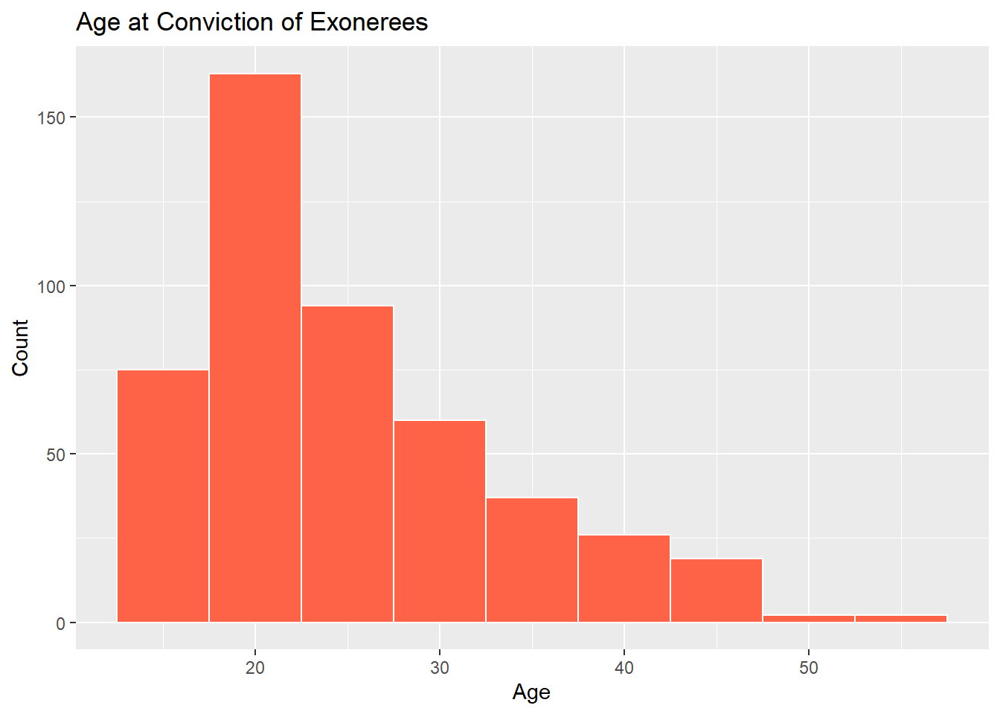
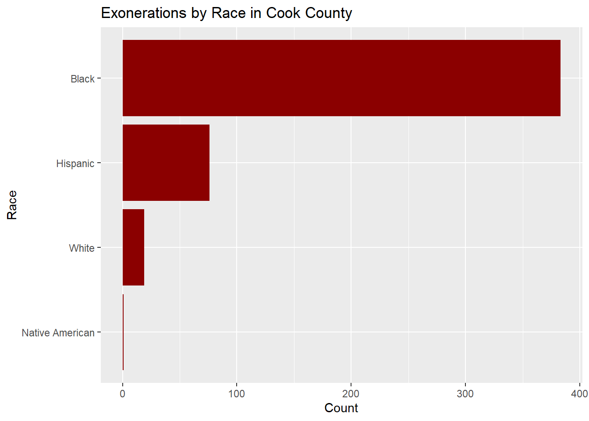
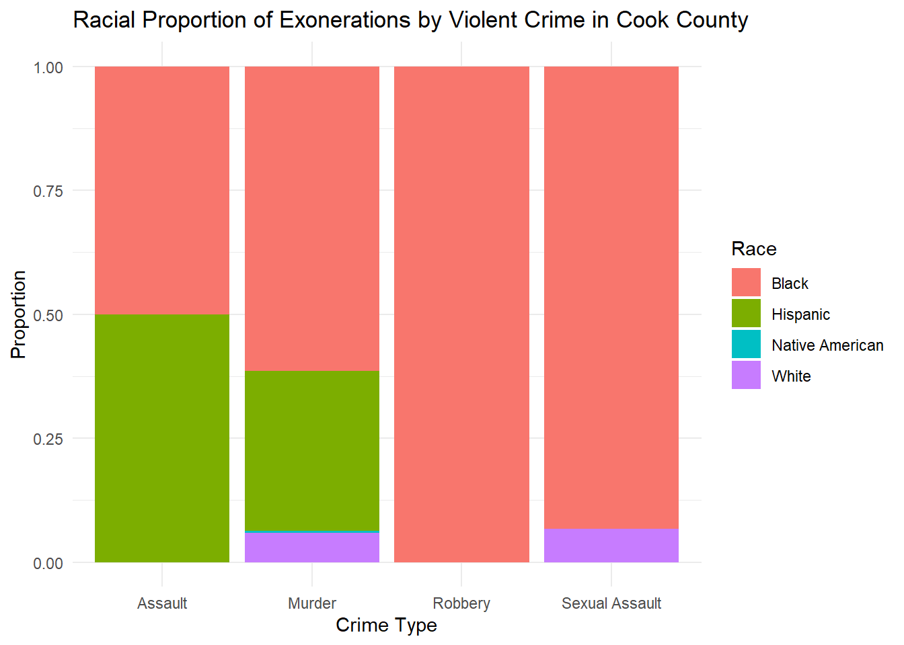

library(shiny)
library(tidyverse)
library(here)
library(dplyr) # for %>%
library(ggplot2)
library(readr)
# Load filtered data
exoneration_data <- read_rds(here("dataset", "exoneration_data_cook.rds"))
crime_data <- read_rds(here("dataset-ignore", "crime_data_2010.rds"))
# Define UI for app that draws a histogram ----
ui <- fluidPage(
titlePanel("Cook County Crimes and Exonerations"),
sidebarLayout(
sidebarPanel(
conditionalPanel(
condition = "input.tabs == 'Crime Trend'",
selectInput("crime_type", "Choose a Crime Type:",
choices = unique(crime_data$`Primary Type`),
selected = "THEFT")
),
conditionalPanel(
condition = "input.tabs == 'Exoneration Rates'",
selectInput("exon_crime_type", "Choose Exonerated Crime Type:",
choices = unique(exoneration_data$Worst_Crime_Display),
selected = "Murder")
),
sliderInput("year_range", "Select Year Range:",
min = 2000, max = 2023, value = c(2010, 2023), sep = "")
),
mainPanel(
tabsetPanel(id = "tabs",
tabPanel("Crime Trend", plotOutput("crimePlot")),
tabPanel("Exoneration Rates", plotOutput("exonPlot"))
)
)
)
)
# Define server logic required to draw a histogram ----
server <- function(input, output) {
# Plot rendering logic
output$crimePlot <- renderPlot({
crime_data %>%
filter(`Primary Type` == input$crime_type,
Year >= input$year_range[1],
Year <= input$year_range[2]) %>%
ggplot(aes(x = Year)) +
geom_bar(fill = "steelblue") +
labs(title = paste("Number of", input$crime_type, "Cases by Year"),
x = "Year",
y = "Number of Cases")
})
output$exonPlot <- renderPlot({
req(input$exon_crime_type)
selected_crime <- input$exon_crime_type
exoneration_data %>%
filter(
County == "Cook",
Race %in% c("Black", "White", "Hispanic", "Asian", "Other", "Don't Know"),
Worst_Crime_Display == selected_crime
) %>%
group_by(Exonerated, Race) %>%
summarise(Exonerations = n(), .groups = "drop") %>%
filter(Exonerated >= input$year_range[1], Exonerated <= input$year_range[2]) %>%
ggplot(aes(x = Exonerated, y = Exonerations, color = Race)) +
geom_line(size = 1.2, na.rm = TRUE) +
labs(
title = paste("Exonerations Over Time –", selected_crime),
x = "Year of Exoneration",
y = "Number of Exonerations",
color = "Race"
) +
theme_minimal()
})
}
# Create Shiny app ----
shinyApp(ui = ui, server = server)Big Picture
A 538/Upshot style article about the data.

This comes from the file big_picture.qmd.
Think of this page as your 538/Upshot style article. This means that you should try to tell a story through the data and your analysis. Read articles from those sites and similar sites to get a feeling for what they are like. Try to write in the style of a news or popular article. Importantly, this page should be geared towards the general public. You shouldn’t assume the reader understands how to interpret a linear regression or a complicated plot. Focus on interpretation and visualizations.
Interactive
Your Big Data page should also include a small interactive dashboard. The dashboard should be created either using Shinylive, as below. This interactive component should in some way support your thesis from your big picture page. Good interactives often provide both high-level understanding of the data while allowing a user to investigate specific scenarios, observations, subgroups, etc.
To get the shinylive-r working.
- Make sure your shiny app works as a regular r chunk.
- Make sure that the chunk is completely self-contained. Meaning all packages and data are loaded inside that chunk. It can’t rely on any other chunks.
- For the data that you are using for shiny, copy the rds file or any other files into the scripts folder, and then publish your website.
- Where you load in your data, change it to use a URL to the data set which will now be on your website. Something like read_rds(“https://sussmanbu.github.io/ma-4615-fa24-final-project-group-a/scripts/dataset_for_shiny.rds”)
- Check that the chunk still works as a regular r chunk.
- Change it to a shinylive-r chunk.
- Commit and publish your work.
I recommend keeping the data used for the shiny interactive relatively small, though this isn’t completely necessary.
Behind the Exoneration Surge: A Racial Reckoning
Thesis Statement: In Cook County, Black defendants are exonerated at far higher rates than white defendants—especially for violent crimes—revealing deep racial disparities in who is wrongly convicted and later cleared.
Explanation: This page explores a troubling pattern in Cook County’s justice system: violent crimes are more likely to lead to exoneration than non-violent crimes, and Black defendants are exonerated at significantly higher rates than white defendants—often 1.5 to 2 times as often. That doesn’t mean Black people are more likely to be innocent. It means they were more likely to be wrongly convicted in the first place.
By comparing exoneration rates by crime type and race over time, we uncover how systemic bias can shape not just who is punished, but also who is eventually vindicated. These disparities don’t just reflect flaws in individual cases—they reveal larger patterns of racial injustice built into the system of arrest, prosecution, and review.
Figure 1: Exonerations by Crime Type
# Load all needed packages right here
library(tidyverse) # brings in ggplot2, dplyr, %>%, etc.── Attaching core tidyverse packages ──────────────────────── tidyverse 2.0.0 ──
✔ dplyr 1.1.4 ✔ readr 2.1.5
✔ forcats 1.0.0 ✔ stringr 1.5.1
✔ ggplot2 3.5.1 ✔ tibble 3.2.1
✔ lubridate 1.9.4 ✔ tidyr 1.3.1
✔ purrr 1.0.2
── Conflicts ────────────────────────────────────────── tidyverse_conflicts() ──
✖ dplyr::filter() masks stats::filter()
✖ dplyr::lag() masks stats::lag()
ℹ Use the conflicted package (<http://conflicted.r-lib.org/>) to force all conflicts to become errorslibrary(here)here() starts at C:/MA615/ma4615-sp25-final-project-team-10# Load filtered data
exoneration_data <- read_rds(here("dataset", "exoneration_data_cook.rds"))
crime_data <- read_rds(here("dataset-ignore", "crime_data_2010.rds"))
exoneration_data %>%
count(Worst_Crime_Display, sort = TRUE) %>%
top_n(10) %>%
ggplot(aes(x = reorder(Worst_Crime_Display, n), y = n)) +
geom_col(fill = "steelblue") +
coord_flip() +
labs(title = "Top 10 Most Common Crimes Among Exonerees",
x = "Crime Type",
y = "Count")Selecting by n
Interpretation: Murder and Drug Possession lead the exoneration count, suggesting the most serious charges are also the most error-prone. These aren’t minor slip-ups—they’re signs of deeper systemic failures. Murder convictions in particular often come from high-pressure investigations where mistakes, misconduct, or bias are more likely to occur.
Figure 2:Age Distribution of Exonerees
ggplot(exoneration_data, aes(x = Age)) +
geom_histogram(binwidth = 5, fill = "tomato", color = "white") +
labs(title = "Age at Conviction of Exonerees",
x = "Age",
y = "Count")Warning: Removed 1 row containing non-finite outside the scale range
(`stat_bin()`).
Interpretation: Most exonerees were convicted between the ages of 18 and 30—young adults at the mercy of a complex legal system. Youth are more susceptible to false confessions, legal pressure, and poor representation. These aren’t just numbers—they reflect whose lives were most disrupted.
Figure 3:Racial Disparities in Exonerations (Cook County Only)
# Load all needed packages right here
library(tidyverse) # brings in ggplot2, dplyr, %>%, etc.
library(here)
cook_data <- exoneration_data %>%
filter(County == "Cook")
cook_data %>%
count(Race) %>%
ggplot(aes(x = reorder(Race, n), y = n)) +
geom_col(fill = "darkred") +
coord_flip() +
labs(title = "Exonerations by Race in Cook County",
x = "Race",
y = "Count")
Interpretation: Black defendants dominate Cook County’s exoneration counts. That doesn’t mean they were treated fairly—it means they were more likely to be wrongfully convicted in the first place. The system isn’t correcting the error; it’s revealing how often it targeted the same group.
Figure 4:Racial Proportion of Exonerations by Violent Crime in Cook County
library(tidyverse)
# Load all needed packages right here
library(here)
violent_crimes <- c("Murder", "Robbery", "Sexual Assault", "Assault")
cook_data <- exoneration_data %>%
filter(County == "Cook", Worst_Crime_Display %in% violent_crimes) %>%
count(Worst_Crime_Display, Race) %>%
group_by(Worst_Crime_Display) %>%
mutate(Proportion = n / sum(n))
ggplot(cook_data, aes(x = Worst_Crime_Display, y = Proportion, fill = Race)) +
geom_col(position = "stack") +
labs(title = "Racial Proportion of Exonerations by Violent Crime in Cook County",
x = "Crime Type",
y = "Proportion",
fill = "Race") +
theme_minimal()Interpretation: This chart illustrates the racial breakdown of exonerations across four major categories of violent crimes in Cook County: Murder, Robbery, Assault, and Sexual Assault. In each category, Black defendants make up the overwhelming majority of those exonerated. In Robbery and Sexual Assault cases in particular, Black exonerees account for nearly all recorded exonerations.
This pattern does not reflect who commits crimes—it reveals who is more likely to be wrongfully convicted. The fact that Black defendants are exonerated at such disproportionate rates suggests that systemic bias operates not just at the point of conviction, but in the very mechanisms that later uncover and correct injustice. In other words, exoneration doesn’t prove the system worked—it shows where it broke.
Summary & Reflection: The thesis was simple: In Cook County, Black defendants are exonerated at much higher rates than white defendants—especially for violent crimes. Our figures confirm this, painting a portrait of a justice system that leans harder on Black communities and reserves its rare corrections for only the most severe cases.
Our goal wasn’t just to show who gets exonerated—but to ask why they needed to be in the first place. These aren’t isolated errors. They are symptoms of a system that has long criminalized race and poverty more than it has pursued truth.
Creativity: When we think of exonerations, we often picture a broken system finally setting things right. But in Cook County, the patterns of who gets exonerated tell a more disturbing story—not just about justice delayed, but justice distorted.
Start with the crime. Violent offenses like murder and assault are more likely to be overturned than non-violent ones. That might sound logical—after all, they get more scrutiny. But that also means wrongful convictions for the most serious charges may be shockingly common.
Then look at race. Black defendants are exonerated far more often than white defendants—not because they’re committing more crimes, but because they’re more likely to be wrongly accused, convicted, and imprisoned. These aren’t isolated mistakes. They’re signs of a system that historically leans harder on Black communities at every stage—from arrest to trial to sentencing.
And then, the final twist: the same system that over-polices and over-convicts Black defendants is the one that only sometimes gets around to clearing them. The exoneration is not proof that the system worked—it’s proof that it failed.
Each of the lines on our graph tells part of that story. They rise when justice catches up—but they exist in the first place because injustice got there first.
Interactive component: Use the “Crime Trend” tab to see how the number of reported crimes in Cook County has changed over time. You can filter by specific offense types (like Theft or Assault) and focus on particular time periods using the slider. This gives important context for understanding the scale and types of criminal charges pursued in the county each year.
Then, switch to the “Exoneration Rates” tab to explore how often people were later cleared of those crimes—broken down by race. You’ll see that Black defendants are consistently exonerated more often than any other group, especially for violent crimes. But that doesn’t mean they were treated fairly. It means they were more likely to be wrongly convicted in the first place.
By moving between the two tabs, you can trace the full arc of Cook County’s criminal justice system—from who gets charged to who ultimately gets a second chance—and who doesn’t.
- Title
- Your big picture page should have a creative/click-bait-y title/headline that provides a hint about your thesis.
- Clarity of Explanation
- You should have a clear thesis/goal for this page. What are you trying to show? Make sure that you explain your analysis in detail but don’t go into top much mathematics or statistics. The audience for this page is the general public (to the extent possible). Your thesis should be a statement, not a question.
- Each figure should be very polished and also not too complicated. There should be a clear interpretation of the figure so the figure has a clear purpose. Even something like a histogram can be difficult to interpret for non-experts.
- Creativity
- Do your best to make things interesting. Think of a how a news article or a magazine story might draw you in. Think of how each part of your analysis supports the previous part or provides a different perspective.
- Interactive component
- Quality and ease of use of the interactive components. Is it clear what can be explored using your interactive components? Does it enhance and reinforce your conclusions?
- This page should be self-contained.
Note: This page should have no code visible, i.e. use #| echo: FALSE.
Rubric: Other components
Video Recording
Make a video recording (probably using Zoom) demonstrating your interactive components. You should provide a quick explanation of your data and demonstrate some of the conclusions from your EDA. This video should be no longer than 4 minutes. Include a link to your video (and password if needed) in your README.md file on your Github repository. You are not required to provide a link on the website. This can be presented by any subset of the team members.
Rest of the Site
Finally, here are important things to keep in mind for the rest of the site.
The main title of your page is informative. Each post has an author/description/informative title. All lab required posts are present. Each page (including the home page) has a nice featured image associated with it. Your about page is up to date and clean. You have removed the generic posts from the initial site template.